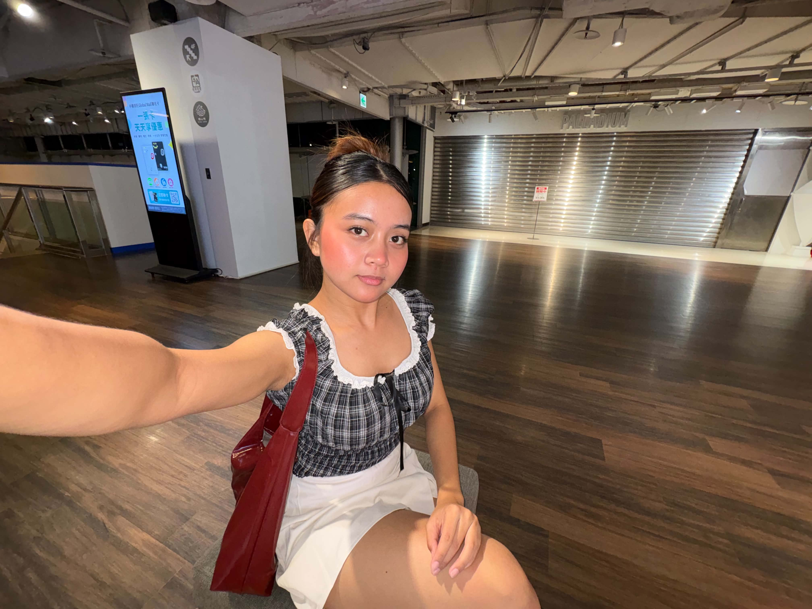

Who I Am & What I've Learned: A Personal Website Built on GitHub Pages
Hello! My name is Larrah Mae Escala, and I am a 20-year-old student currently pursuing a degree in Information Management. Outside of my studies, I enjoy exploring new digital tools, organizing data, and spending quality time with friends and family. My primary goal is to excel academically so I can build a successful career in the tech and business sectors and achieve long-term financial stability.
This class has been a rewarding hands-on experience that bridged the gap between theoretical concepts and practical web development. Starting with the basics of structuring content and gradually moving into layout and design, each activity helped me understand how different web elements work together. By applying what I learned in class and troubleshooting errors along the way, I gained the technical confidence and problem-solving skills needed to create digital projects independently—an essential asset as I pursue my degree in Information Management.